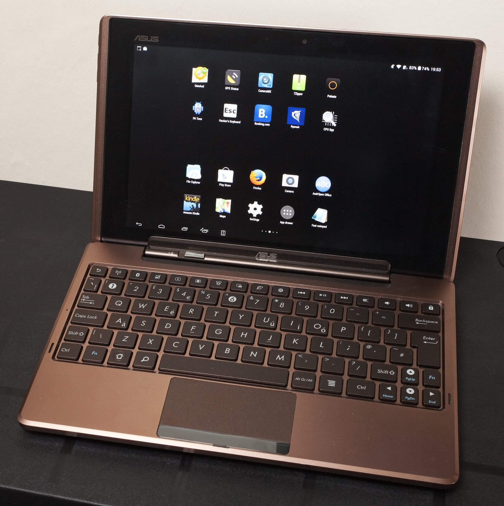

ASUS Eee Pad Transformer (asus-tf101)
|
 ASUS Eee Pad Transformer | |
| Manufacturer | ASUS |
|---|---|
| Name | Eee Pad Transformer |
| Codename | asus-tf101 |
| Released | 2011 |
| Category | testing |
| Original software | Android 3.0 on Linux 2.6.36 |
| Hardware | |
| Chipset | Nvidia Tegra 2 (T20) |
| CPU | Dual-core 1 GHz |
| GPU | ULP GeForce |
| Display | 1280x800 IPS |
| Storage | 16/32 GB |
| Memory | 1 GB |
| Architecture | armv7 |
| Unixbench Whet/Dhry score | 442.8 |
{kind=link}
| USB Networking |
Works
|
|---|---|
| Flashing |
Partial
|
| Touchscreen |
Works
|
| Display |
Works
|
| WiFi |
Works
|
| FDE |
Partial
|
| Mainline |
Works
|
| Battery |
Works
|
| 3D Acceleration |
Partial
|
| Audio |
Works
|
| Bluetooth |
Works
|
| Camera |
Broken
|
| GPS |
Partial
|
| Mobile data |
Unavailable
|
| SMS |
Unavailable
|
| Calls |
Unavailable
|
| USB OTG |
Unavailable
|
| NFC |
Unavailable
|
| Accelerometer |
Works
|
|---|---|
| Magnetometer |
Works
|
| Ambient Light |
Works
|
| Proximity |
Unavailable
|
| Hall Effect |
Works
|
| Barometer |
Unavailable
|
| Power Sensor |
Unavailable
|
| Camera Flash | |
|---|---|
| Keyboard |
Works
|
| Touchpad |
Works
|
| USB-A |
Works
|
| HDMI/DP |
Works
|
| Ir TX |
Unavailable
|
| Ir RX | |
| Stylus | |
| Haptics | |
| Ethernet | |
| FOSS bootloader |
Works
|
| Primary Bootloader |
Works
|
|---|---|
| Secondary Bootloader |
Works
|
| Mainline |
Works
|
| Internal Storage |
Works
|
| SD card |
Works
|
| USB Host |
Works
|
| USB Peripheral |
Works
|
| Display |
Works
|
| Keyboard |
Broken
|
| Buttons |
Works
|
Basic Information
The Eee Pad is a tablet computer with a 10.1" IPS multi-touch screen with a resolution of 1280 × 800 and an Nvidia Tegra 2 system-on-a-chip (SoC). It has an 802.11b/g/n Wi-Fi module.
Requirements
The Eee Pad Transformer TF101 already comes with an unlocked bootloader, so no previous requirements are needed.
A custom recovery such as TWRP is not even needed neither.
Mainline Informations
Installation
| If you haven't ever customized your TF101, please go here first. |
|
WARNING: This mainline installation does not work for TF101G or SL101 variants! Please use downstream installation instead or use this method. We give first priority to U-Boot flashed devices than existing support to the old bootloader.
In addition, these steps will format ALL the partitions of the TF101's partition table and then recreate them but with u-boot bootloader flashed on it, instead of the proprietary Asus Bootloader. |
| A Linux computer is required (virtual machine won't work). Furthermore, this installation process has not been verified by a TF101 SBK2 version but it should also work. |
Use the latest 9.2.1 firmware available, so upgrade if you need it here (mirror here).
You must know which SBK version your tablet has. For the asus-tf101, there are two versions only: sbkv1 and sbkv2.
However there is a caveat: two proprietary tools are needed, Wheelie (although source code is available on GitHub, some key features are missing, such as `--sbk` option) and Nvflash (proprietary Nvidia flash tool). So, a custom setup is available to get this working a little bit easier.
1. Go through the pmbootstrap installation method: `pmbootstrap init`, select your device (asus -> tf101), the interface or UI (XFCE, MATE or LXQT are recommended), `pmbootstrap export` and flash the resulting image to your Micro SD Card.
2. Now connect the device to the computer. This USB to 40 Pin cable is required.
3. Put your device into APX mode: First of all, power off the device and then press the power button + volume up button for 3 to 5 seconds.
4. Download U-Boot Tools for Asus Eee Pad Transformer TF101 here. Please read the release notes for instructions.
- If you are unsure which SBK version you have, please try both flashing methods.
| WARNING: Do not unplug the USB under any circumstance. |
5. Some operations will be executed on the tablet. Please be patient, wait from 5 to 10 minutes. Formatting Partition 15 (UDA) can also take some time. In case you don't know the SBK version of your tablet, you will see some errors, or the device not booting at all. In that case, please try the other SBK version.
Expected output (SBK1 example):
user@mycomputer:~$ ./uboot_sbkv1.sh Wheelie 0.1 - Preflight for nvflash. Copyright (c) 2011-2012 androidroot.mobi ======================================== Using SBK type 1. Using bootloader: 'bootloader.bin'. Using BCT: 'transformer.bct'. ---------------------------------------- [=] Chip UID: YourHardwareID [=] RCM Version: 0x20001 [=] CPU Model: Tegra 2 [=] Secure Boot Key Set: Yes [+] Sending BCT Sending file: 100 % [+] Sending ODMData 0x300D8011 [+] Sending bootloader... Sending file: 100 % [!] Done - your device should now be ready for nvflash Nvflash started [resume mode] setting device: 2 3 creating partition: BCT creating partition: PT creating partition: EBT creating partition: SOS creating partition: LNX creating partition: BAK creating partition: GP1 creating partition: APP creating partition: CAC creating partition: MSC creating partition: USP creating partition: PER creating partition: YTU creating partition: UDA creating partition: GPT Formatting partition 2 BCT please wait.. done! Formatting partition 3 PT please wait.. done! Formatting partition 4 EBT please wait.. done! Formatting partition 5 SOS please wait.. done! Formatting partition 6 LNX please wait.. done! Formatting partition 7 BAK please wait.. done! Formatting partition 8 GP1 please wait.. done! Formatting partition 9 APP please wait.. done! Formatting partition 10 CAC please wait.. done! Formatting partition 11 MSC please wait.. done! Formatting partition 12 USP please wait.. done! Formatting partition 13 PER please wait.. done! Formatting partition 14 YTU please wait.. done! Formatting partition 15 UDA please wait.. done! Formatting partition 16 GPT please wait.. done! done! sending file: u-boot.bin - 565989/565989 bytes sent u-boot.bin sent successfully Nvflash started [resume mode]
8. Now press the power button for a few seconds to reboot the device. After that, disconnect the USB from the device. It should be booting PostmarketOS!
WiFi and Bluetooth setup
If, for any reason, the WiFi or Bluetooth connections are not detected properly on the device, you may need to do these additional steps:
$ sudo cp /lib/firmware/postmarketos/brcm/* /lib/firmware/brcm/
Downstream informations
Installation
You have to flash a recovery like TWRP before doing this.
$ pmbootstrap install $ pmbootstrap export
Now reboot the device in recovery
$ adb push /tmp/postmarketOS-export/boot.img-asus-tf101 /cache $ adb push /tmp/postmarketOS-export/asus-tf101.img /cache
The following should be executed within adb shell:
$ adb shell # dd if=/cache/boot.img-asus-tf101 of=/dev/block/mmcblk0p4 # dd if=/cache/asus-tf101.img of=/dev/block/mmcblk0p1
WiFi setup
WiFi is provided by the firmware-aosp-broadcom-wlan package. A very similar process can be found in https://wiki.postmarketos.org/wiki/Medion_Lifetab_S9714_(medion-kai)#How_bonsaiblue_made_wifi_work.
If the package is not installed, install it. Then, rename firmware files for detection:
# mv /lib/firmware/postmarketos/bcmdhd/bcm4329/fw_bcm4329.bin /lib/firmware/postmarketos/bcmdhd/bcm4329/fw_bcmdhd.bin # mv /lib/firmware/postmarketos/bcmdhd/bcm4329/fw_bcm4329_abg.bin /lib/firmware/postmarketos/bcmdhd/bcm4329/fw_bcmdhd_abg.bin # mv /lib/firmware/postmarketos/bcmdhd/bcm4329/fw_bcm4329_apsta.bin /lib/firmware/postmarketos/bcmdhd/bcm4329/fw_bcmdhd_apsta.bin
Now reboot your device and Wi-Fi will be detected properly.
Bluetooth setup
Bluetooth is provided by the bcm4329.hcd firmware file. It can be activated in downstream by some little hack that works for most bcm4329 and bcm4330 devices. You may need to build its source first: https://github.com/antonialoytorrens/brcm-patchram-plus
Please follow these steps to get it working:
#!/bin/sh # Start brcm-patchram-plus for TF101 rfkill unblock 0 /usr/sbin/brcm_patchram_plus -d --patchram /lib/firmware/postmarketos/brcm/bcm4329.hcd --baudrate 921600 --bd_addr $(cat /lib/firmware/postmarketos/brcm/mac.txt) --enable_hci /dev/ttyHS2&
Where mac.txt is your MAC address. Works even if you generate it randomly, but it is still experimental and a work in progress. Sample here
See here for more information.
Hardware
Hardware status
Status for Mainline (M) and Downstream (D) kernels.
| Status (M) | Status (D) | Hardware | Info (M) | Info (D) |
|---|---|---|---|---|
| Y | Y | Booting | boot.img has restriction of approx 8MB, which is /boot partition size. | |
| Y | Y | Panel | AUO B101EW05 WXGA (1280x800) LCD IPS panel through LVDS controller. | |
| Y | N | HDMI output | ||
| Y | Y | Touchscreen | Used Atmel MXT1386 touchscreen. | |
| Y | Y | USB | One full size USB 2.0 in dock or via 40pin adapter. | |
| Y | Y | SD Card | MicroSD card and full sized SD card (recognized as USB drive) in dock. | |
| Y | Y | eMMC | Kingston KE4BT4B6A NAND Flash | |
| P | N | GPS | Broadcom GPS BCM4751 is used. Device tree has proper bindings but device itself has weak signal. | |
| Y | Y | WiFi | Azurewave AW-NH615 BCM4329. Wi-Fi should work out of the box. All needed stuff is included. | |
| Y | N | GPIO keys | There are 4 keys on GPIO: Power, Volume up, Volume down and LID sensor. | |
| Y | Y | Dock Keyboard | Dock has Nuvoton NPCE795LA0BX embedded controller which handles battery data, charging, leds, keyboard and touchpad. Driver of this EC is mainlined and is fully functional. Keyboard and Touchpad work. Alt Gr can be used for alternate multimedia keys instead of escape, fn keys, volumes and delete. Alt GR + Lock changes the default key mode. | |
| Y | Y | Battery and Charger | Driver is based on Texas Instruments bq20z75 SMBus Charge Controller driver. Charging and charge level of both batteries are shown correctly. | |
| Y | N | PMIC | TF101 uses Texas Instruments tps6586x PMIC. | |
| Y | N | Sound | Kernel driver and tegra_wm8903 glue driver are present. ALSA UCM is configured. Audio through HDMI works. | Sound codec is WM8903 |
| Y | N | Voice processor | Transformers use separate Fortemedia FM34NE voice processor. Basic set up is implemented. | |
| Y | N | Thermal sensor | NCT1008 ON Semiconductor LM90 series thermometer. | |
| Y | N | Orientation sensors | Include Invensense mpu3050 gyroscope with Kionix KXTF9 accelerometer and Aichi AMI306 3-axis digital compass. | |
| Y | N | Light sensor | Driver Dyna-Image AL3000. | |
| N | N | Front/rear camera | ||
Partition Overview
| # | Block Device | Name | Type |
|---|---|---|---|
| 2 | BCT | Boot Config Table | |
| 3 | PT | Partition Table | |
| 4 | EBT | Bootloader | |
| 5 | mmcblk0p9 | SOS | Recovery OS kernel (e.g. TWRP) |
| 6 | mmcblk0p10 | LNX | Current OS kernel (PostmarketOS or Android) |
| 7 | BAK | Data | |
| 8 | GP1 | Partition Table (Instance #1) | |
| 9 | mmcblk0p1 | APP | Android Apps Partition |
| 10 | mmcblk0p2 | CAC | Cache partition |
| 11 | mmcblk0p3 | MSC | Misc partition |
| 12 | mmcblk0p4 | USP | Staging partition (here are stored blobs before flashing by Asus bootloader) |
| 13 | mmcblk0p5 | PER | Persist partition (contains device specific files like mac and sensors calibrations) |
| 14 | mmcblk0p6 | YTU | Data |
| 15 | mmcblk0p7 | UDA | Android User Data Partition |
| 16 | GPT | Partition Table (Instance #2) |
Photos
TF101 Booting (downstream):
{kind=link}
TF101 running Xfce user interface (downstream):
{kind=link}
TF101 running Mate desktop:
{kind=link}
Developer Info
Testing U-Boot in RAM
Nvflashing U-boot has its benefits: it acts as a temporary bootloader when booting Linux on TF101. The uboot file is stored in RAM instead. That way, you don't have to worry about flashing it permanently every time, only to test it.
To perform this, put your tablet in APX mode, download the needed files and type the following command (be aware this is for SBK1, for SBK2 you need to change the SBK keys) (not tested with SBK2, you can try this command anyway and report):
$ ./nvflash --bct transformer.bct --setbct --configfile flash.cfg --bl u-boot.bin --odmdata 0x300d8011 --sbk 0x1682CCD8 0x8A1A43EA 0xA532EEB6 0xECFE1D98 --sync
Note that there is an u-boot.bin file already in the zip folder. Please replace it with your u-boot.bin file instead.
Nvflash partitiontable.txt
Nvflash can print your partition table configuration as a better setup for offset calculations, needed in U-Boot.
To perform this, put your tablet in APX mode, download the needed files and type the following command (be aware this is for SBK1, for SBK2 you need to change the SBK keys) (not tested with SBK2, you can try this command anyway and report):
$ ./nvflash --bct transformer.bct --setbct --configfile flash.cfg --bl bootloader.bin --odmdata 0x300d8011 --sbk 0x1682CCD8 0x8A1A43EA 0xA532EEB6 0xECFE1D98 --sync $ ./nvflash --resume --getpartitiontable partitiontable.txt
After that, if you have followed all this guide, your partition table txt file should be exactly like this:
| If you haven't ever customized your TF101, which means it's your first time using this nvflash command and you don't have used any One-Click-Unlock Tool or EasyFlasher, please report here and attach partitiontable.txt file first before continuing with the installation. |
PartitionId=2 Name=BCT DeviceId=18 StartSector=0 NumSectors=1536 BytesPerSector=2048 PartitionId=3 Name=PT DeviceId=18 StartSector=1536 NumSectors=256 BytesPerSector=2048 PartitionId=4 Name=EBT DeviceId=18 StartSector=1792 NumSectors=2048 BytesPerSector=2048 PartitionId=5 Name=SOS DeviceId=18 StartSector=3840 NumSectors=2560 BytesPerSector=2048 PartitionId=6 Name=LNX DeviceId=18 StartSector=6400 NumSectors=4096 BytesPerSector=2048 PartitionId=7 Name=BAK DeviceId=18 StartSector=10496 NumSectors=2560 BytesPerSector=2048 PartitionId=8 Name=GP1 DeviceId=18 StartSector=13056 NumSectors=512 BytesPerSector=2048 PartitionId=9 Name=APP DeviceId=18 StartSector=13568 NumSectors=262144 BytesPerSector=2048 PartitionId=10 Name=CAC DeviceId=18 StartSector=275712 NumSectors=271104 BytesPerSector=2048 PartitionId=11 Name=MSC DeviceId=18 StartSector=546816 NumSectors=1024 BytesPerSector=2048 PartitionId=12 Name=USP DeviceId=18 StartSector=547840 NumSectors=271104 BytesPerSector=2048 PartitionId=13 Name=PER DeviceId=18 StartSector=818944 NumSectors=2560 BytesPerSector=2048 PartitionId=14 Name=YTU DeviceId=18 StartSector=821504 NumSectors=256 BytesPerSector=2048 PartitionId=15 Name=UDA DeviceId=18 StartSector=821760 NumSectors=14808320 BytesPerSector=2048 PartitionId=16 Name=GPT DeviceId=18 StartSector=15630080 NumSectors=256 BytesPerSector=2048
Community Info
Contributors
- CmdrWgls
- rrooij
- LongnoseRob
- blacksoil
- AAT596
Users owning this device
- AAT596 (Notes: Dogfooding this device for daily basic tasks, very useful)
- I9505 someone
- LongnoseRob (Notes: pmOS with Grate kernel and U-Boot)
- Lusiferaleisterandreyluzhin (Notes: used and hosts my website 24/7 (2021) , was seized by the police investigation department on March 8, 2022, returned six months later , waiting for flashing u-boot skb2 , have photos in disassembled form)
- Pangelo (Notes: broken bezel and power/volume button supports but works ok)
Links
- Partition overview
- !1103 initial PR
- Nvidia Tegra 2 (tegra20)
- WIP pmaports repository
- Initial mainline tree for TF101, build mainline U-Boot from source
- Some notes about nvflash and APX mode
- Some issues with Qt applications